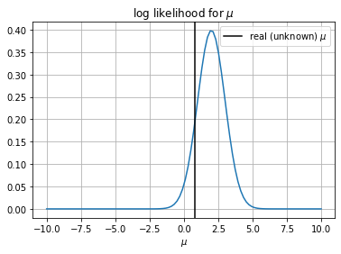
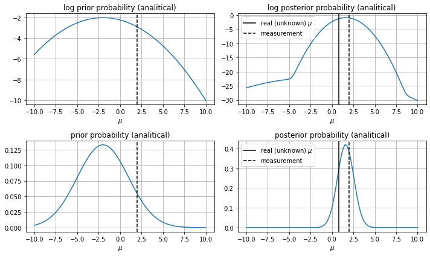

import numpy as np
import matplotlib.pyplot as plt
from scipy import stats
from scipy.integrate import quad
from progressbar import progressbar as pbar
from rlxutils import subplots, copy_func
%matplotlib inline
Our model#
We observe a variable \(X\) which is a 1D position of an object
\[\begin{split}\begin{align*}
X &\sim \mathcal{N}(\mu, 1)\\
\mu &\sim \mathcal{N}(0,3)& \;\;\;\text{prior on }\mu = P(\mu)\\
x_0 &= 1.5&\;\;\;\text{a measurement}\\
\end{align*}\end{split}\]
The posterior is
\[P(\mu|x_0) = \frac{P(x_0|\mu) P (\mu)}{P(x_0)}\]
# real (and unknown) parameter
real_mu = 0.8
# possible range of values for mu
mu_support = np.r_[-10,10]
eps=1e-10
class Model:
def __init__(self, mu):
self.mu = mu
self.dist = stats.norm(loc=mu, scale=1)
def rvs(self, n):
return self.dist.rvs(n)
def log_prob(self, x):
return np.log(self.dist.pdf(x) + eps)
# loglikelihood on mu
@classmethod
def log_likelihood(cls, mu, x):
return cls(mu).log_prob(x)
An observation#
#x = Model(real_mu).rvs(1)[0]
# a very extreme (low probability) observation
x = 2
# fix the likelihood to the observed data, so that it is
# only a function of mu
log_likelihood = lambda mu: Model.log_likelihood(mu, x)
rmu = np.linspace(*mu_support, 100)
plt.plot(rmu, [np.exp(log_likelihood(mu)) for mu in rmu])
plt.axvline(real_mu, color="black", label=r"real (unknown) $\mu$")
plt.legend();
plt.grid(); plt.xlabel(r"$\mu$"); plt.title(r"log likelihood for $\mu$");

# the posterior (using Bayes theorem)
def get_logposterior_fn(loglikelihood_fn, logprior_fn, support, integration_intervals=1000):
assert len(support)==2
# Montecarlo computation of the integral
xr = np.linspace(*support, integration_intervals)
Z = np.log(np.sum([np.exp(loglikelihood_fn(x) + logprior_fn(x)) for x in xr]) * (xr[1]-xr[0]))
posterior_fn = lambda x: loglikelihood_fn(x) + logprior_fn(x) - Z
return posterior_fn
def plot_logprobs(logprior, logposterior):
rmu = np.linspace(*mu_support,100)
for ax,i in subplots(4, usizex=5, n_cols=2):
if i in [0,2]:
p = logprior if i==0 else lambda x: np.exp(logprior(x))
plt.plot(rmu, [p(mu) for mu in rmu])
plt.axvline(x, color="black", ls="--", label=r"measurement")
plt.grid();
plt.title(("log " if i==0 else "")+"prior probability (analitical)")
if i in [1,3]:
p = logposterior if i==1 else lambda x: np.exp(logposterior(x))
plt.plot(rmu, [p(mu) for mu in rmu])
plt.axvline(real_mu, color="black", label=r"real (unknown) $\mu$")
plt.axvline(x, color="black", ls="--", label=r"measurement")
plt.title(("log " if i==1 else "")+"posterior probability (analitical)")
plt.grid(); plt.legend();
plt.xlabel(r"$\mu$")
plt.tight_layout()
log_prior = lambda mu: np.log(stats.norm(loc=-2,scale=3).pdf(mu) + eps)
log_posterior = get_logposterior_fn(log_likelihood, log_prior, mu_support)
plot_logprobs(log_prior, log_posterior)

## check the integral of the posterior adds up to 1
## we do this for sanity, as numerical errors computing the
## integral in bayes theorem might arise very easily
rmu = np.linspace(mu_support[0] - 10, mu_support[1] + 10, 1000)
dmu = rmu[1] - rmu[0]
np.sum([np.exp(log_posterior(mu))*dmu for mu in rmu])
1.0000000000067457
posterior mean and std#
through expectations
# mean
mean_ev = np.sum([np.exp(log_posterior(mu))*mu*dmu for mu in rmu])
mean_ev
1.5999999943656429
# std
std_ev = np.sqrt(np.sum([np.exp(log_posterior(mu))*(mu-mean_ev)**2*dmu for mu in rmu]))
std_ev
0.9486833178763522